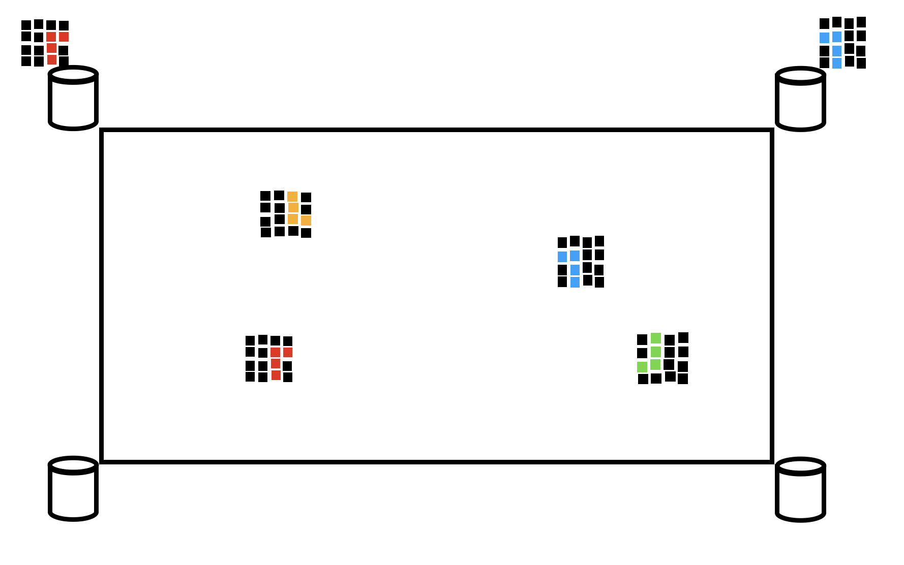
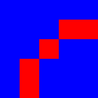
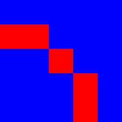
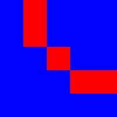
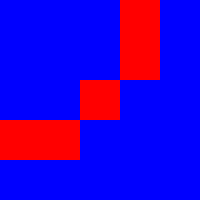

This document describes image-and-property-based objects, which have been made available since Game Server ver. 3.*. It is based on the proposal documents:
For conciseness, in this document I will use the term "object" to refer to a class of identically looking entities, e.g. "black square(s)". The term "game piece" will refer to an individual object at a particular location on the board.
There are be two ways of defining objects in Game Engine 3.*.
For compatibiliy with Game Engine 1.* and 2.*, it is still possible to define an object as a combination of a color (defined by an entry in the shared color map) and a shape (defined by a color-less SVG file); e.g. a black square is defined by its color (black) and shape (square, referring to square.svg in the shape directory). We will refer to such traditional objects as shape+color tuple objects, or SC objects.
In addition, a new way of defining object types has become available since Game Engine 3.*. In this approach, each object is defined by:
Since multiple experiments with different sets of objects can be carried out on the game server, IPB object descriptions can be located in multiple directories under the main shape directory, /opt/tomcat/game-data/shapes. For example, if an experiment designer has named a particular experiment exp-20210501-a and decided to use two groups of objects, heraldic animals and arrows, as game pieces in that experiment, he may want to put them into new directories, /opt/tomcat/game-data/shapes/exp-20210501-a/animals and /opt/tomcat/game-data/shapes/exp-20210501-a/arrows. (Of course, the experimenters may decide to use the same group of images in multiple experiments, so maybe one of the directories will be simply named /opt/tomcat/game-data/shapes/arrows, or whatever.
(Note: anyone who reads this document is, of course, expected to know that, as per our SOP, one does not put files directly to the /opt/tomcat/game-data tree, but deploys them there via the GitHub repository!)
Each directory containing image files (unless it only contains colorless SVG images for use in GS 2.*-style experiments) will need to contain a properties file, named properties.csv, which will contain the descriptions of all objects defined in that directory. This CSV file, therefore, will need to contain 1 line of text per each image file in the directory, in addition to the header line on top. For example, it may look something like this:
#image,name,species,posture,orientation,color,brightness
tiger-01.svg,tiger-01,tiger,crouching,right,,bright
tiger-02.svg,tiger-02,tiger,crouching,left,,bright
tiger-03.svg,tiger-03,tiger,crouching,right,,faded
tiger-04.svg,tiger-04,tiger,crouching,right,,faded
tiger-05.svg,tiger-05,tiger,leaping,right,,bright
tiger-06.svg,tiger-06,tiger,leaping,left,,bright
lion-01.png,lion-01,lion,rampant,left,yellow,
lion-02.png,lion-02,lion,rampant,left,red,
lion-03.png,lion-03,lion,rampant,left,black,
weasel-01.jpg,weasel-01,weasel,sitting,left,pink,
weasel-02.jpg,weasel-01.jpg,weasel-02,weasel,sitting,right,black,
weasel-03.jpg,weasel-03,weasel,running,right,*,
....
In the table, above:
Property names should be written using lower case Latin letters; they may also contain the underscore character (_) and digits, but not in the first position.
If, for a particular object, the cell corresponding to property X is empty (contains an empty string), this means that property X is not defined for that object (e.g., all our tigers are striped, and we don't associate a color property with them). This means that any rule atom that only select objects with property X having a particular value won't select this object.
It is also possible for an object to contain an * in the column for property X. This object will match any X-based selector.
One should not use the following words for property names: image, pos.
The property names shape and color are perfectly legal to use in a property file. The Game Server software and the GUI client will know that the objects involved are IPB objects, rather than as shape-color tuples, and will handle them accordingly.
If you want to design an experiment using image-and-property-based objects, you may consider generating both a group of object images and the property file describing them programmatically, by means of a customized program or shell script. For example, if one wants to create a directory with 24 images of arrows, consisting of red, green, and yellow arrows pointing in 8 directions (N, NE, E, SE, etc), one can manually create a single image (in an image editing program such as Inkscape, Gimp, or Microsoft Paint), and then have a script produce multiple images by rotating the original image and changing its color, using a command-line image manipulation utility such as ImageMagick.
In a more sophisticated example, you can have a 3D model of solid structure, such as a statue (e.g. in VRML or X3D format), and a program that rotates it in various ways and saves various 2-D projections (equivalent to views from different directions) as separate images; for each image it will create an entry in the properties file describing the direction from which the statue is viewed (e.g. using spherical coordinates).
For an example of a set of images generated by a script, see /opt/tomcat/game-data/shapes/vm/image_test_02. The numerous SVG files, and the property file, in that directory were generated by the script create.sh in the same directory. This set of images are used in the experiment plan vm/image_test_02.
If you need some help with generating a series of images along with an accompanying property file, contact Vladimir.
If one can create multiple SVG files by an automatic tool and store them for later use, can one make the next step, and have the Game Server generate SVG images in runtime, without ever storing SVG files on disk? This approach has in fact been implemented in GS 4.009 for one class of objects, namely the composite image objects.
In GS 1.* and 2.*, there were two methods for a parameter set (a line of a trial list file) to specify the process how boards initialized during the episodes played pursuant to this parameter set. In a given parameter set, one can either describe a sequence of prefedined initial boards, or specify the parameters of a random initial board generator.
Both of these methods exist in GS 3.* as well, and support not only traditional SC objects but also new IPB objects.
If your parameter set uses predefined initial boards, there is not much difference from GS 2.*. The way the parameter set specifies the location and ordering of prefedined initial boards is exactly the same; any of the initial board files themselves may contain either SC objects, or IPB objects, or any combination of both types of objects.
In GS 2.*, a parameter set could specify the parameters of the random board genrator, i.e. the min and max number of pieces on the board, the min and max number of colors and shapes, as well as the set of shapes and the set of colors from which the shapes and colors of all pieces are drawn. (If those two sets are not specified in the parameter set, the legacy 4-shape and 4-color sets are used as the defaults).
In GS 3.*, if you want to generate random boards using IPB objects, you need to first specify the set from which these objects are drawn, by using the images parameters. You also need to provide the min_objects and max_objects, same as for the traditional SC objects. You don't need the min_shapes, max_shapes, min_colors, max_colors any more, since they are not applicable in the IPB context.
The value in the images parameter, is essentially, a list of image files, with *-based and ?-based wildcard expressions allowed, and the [x,y,...] notation for lists. The file locations can be relative (interpreted as relative to the server's shape directory) or absolute. For example,
[exp-20210501-a/animals/*,exp-20210501-a/arrows/*,legacy/black-square,/home/vmenkov/photos/tortoise.jpg]
will include all image files from
/opt/tomcat/game-data/shapes/exp-20210501-a/animals and /opt/tomcat/game-data/shapes/exp-20210501-a/arrows, as well as /opt/tomcat/game-data/legacy/black-square.svg and /home/vmenkov/photos/tortoise.jpg. (For compatibility with GS 2.*, the .svg extension can be omitted for brevity; however, other extensions, such as .jpg or .png, should not be omitted when specifying individual files).
Note that, if you are using a random board generator in your parameter set, it cannot combine SC objects and IPB objects in the same parameter set. If you want your random boards to contain, for example, both black squares and rampant lions, you have to create a directory in which shape-and-color tuples are defined as IPB objects, i.e. with an individual image file for each object (black-suqare.svg etc)
In addition to the "legacy" fixed 5-tuple format for rule atoms,
(count, shapes, colors, positions, buckets)
, Game Engine 3.* also supports the new extensible format, t where every field in the atom has to be explicitly labeled, and no field is mandatory:
(count:count, property1:valueList1 [, property2:valueList2] [pos:positions,], bucket:buckets)
An absent field is equivalent to a present field with the value *, i.e. "anything is allowed, as far as this type of condition is concerned".
As it is the case with the "legacy" atoms, each free-style atom can be understood as a conjunction. That is, for an atom to allow moving a game piece to a bucket, each part of the atom, viewed as a condition, must yield true on this game piece. The possible conditions include:
()
is the trivial conjunction of no conditions -- so it means, "take any number of pieces and put them into any buckets". If for example, the condition specifies count and the property species, e.g.
(count:3 species:[lion,mouse])it means, "take 3 pieces that are lions or mice, and put them into any buckets". The atom
(species:tiger color[pink:blue] pos:T bucket:[0,1])means, "take any number of pink or blue tigers from the top occupied row of the board, and put them to bucket 0 or 1".
For example, an atom
(species:tiger, brightness:bright, bucket:0)
will allow the player to pick all bright tigers and put them into bucket 0.
(If a particular property is not explicitly listed in an atom, it means that there is no restriction on this property). An atom
(count:3, color:black, pos:T, bucket:1)
will allow the player to pick 3 objects whose color is black from the top occupied row of the board, and put them into bucket 1. In the table above, the matching objects for this atom will include our black lion, black weasel, and the "color-inclusive" weasel:
lion-03,lion,rampant,left,black, weasel-02,weasel,sitting,right,black, weasel-03,weasel,running,right,*,
Just like one could do it with shapes and colors in GS 1.* and 2.*, one can also use lists of values with IBP objects. E.g. the atom
(count:2, species:[tiger,lion], direction:right, bucket:0)
will allow the player to pick 2 right-facing tigers or lions.
A new feature in GS 3.* is value ranges.
Suppose the property angle is integer-valued, with values ranges from 0 to 360; it is used to describe the orientation of objects (the rotation angle from some initial position). For example, suppose the experiment desisgner uses this property to indicate the angle by which an arrow is rotated, counterclockwise, from the direction "east" (X axis):
image,color,angle
arrow-b-0,black,0
arrow-b-10,black,10
arrow-b-20,black,20
arrow-b-30,black,30
...
arrow-b-350,black,350
arrow-r-0,red,0
...
In this case, it is legal to use the value range syntax, val1..val2
in the conditions applied to property angle. For example, we can have the rule line
(count:*, angle:[0..45,315..360], bucket:[1,2]) (count:*, angle:45..135, bucket:[0,1]) (count:*, angle:135..225, bucket:[3,0]) (count:*, angle:135..225, bucket:[2,3])This rules means that e.g. every arrow pointing to an approximately northern direction (between angle 45 = NE and angle 135 = NW) can be put into the NE or NW buckets (buckets 2 and 1), etc.
When creating a rule with a range for some property, the experiment designer should ensure that all objects for which this property is defined contain eiher a numerical value for this propery, or the special value * (which matches all selectors).
As of GS 2.*, the expression used as the last element of the atom makes use of the variables ps and pc, which refer to "the most recent bucket into which an object of this shape was put" and "the most recent bucket into which an object of this shape was put". This syntax is not available for IPB objects. This syntax has been extended to apply to IPB objects, so that we can express concepts such as e.g. "the most recent bucket into which an object with this orientation was put". The following syntax is used for variable names:
p.property
where property is the name of the property in question. So, for example, if our objects have the property species, the variable named
p.species refers to "the most recent bucket into which an object sof this species was put".
The Game Engine exports the informastion about the current state of the board in JSON format when the Web-based Game Server transmits this information to the GUI client, or when the Captive Game Server sends this information to the ML program that has spawned the CGS.
When a JSON representation is former for sending to the GUI client, each IPB game piece is identified just by the image attribute. The GUI client does not need to know about the properties associated with this object in the properties table, since all it needs is the image.
Question for discussion: What information should be supplied in the JSON representation of the board provided by the Captive Game Server to the ML program?
We can contrast the traditional SC objects and the new IPB objects. With the traditional SC objects, it is very easy for a non-blind and non-color-blind human to divide all objects on the board into several groups according to their shape, and, similarly, into several groups according to their color. A ML player is also told these two properties for each object.
Within the set of the IPB objects used in a particular game, the properties may be more subtle. Still, by looking at several boards full of heraldic animals -- or even full of unique photographs of live animals -- a human may naturally use his innate image recognition abilities and logical abilities and decide to classify them by species, and maybe by posture as well. Now imagine that the images are cartoon animals, and besides the species and orientation, the experiment designer added the property named mood to the properties table, classified the animals into happy and sad, and added some rules making use of this mood property. The player may or may not figure that the mood affects the behavior of game pieces, but he well may, again based on his mental picture of the world, and maybe some experience with cartoons.
Still, a human player is never explicitly told what properties of objects may be used in the rules, and he has to figure that on his own, likely making natural guesses of what features are salient. E.g. if the game pieces are alphabetic glyphs from various alphabets, such as
A, Λ, V, М, Δ, E, Γ, L, Π Ш, O, U, Ո, Φ, P, З, C, a human player may need to make guesses as toRecently (2021-04-13) on Slack Jerry apparently suggested that they can use :"deep net feature representation" to anlyze the images. If something like this can be tried, then perhaps a ML program could try to play against the the Captive Game Server without being explicitly supplied features, just like a human would...
Based on Jerry's and Shubham's input at the 2021-04-19 meeting, it was understood that the ML team indeed intends to use image recognition. So their ML application can get the SVG or JPEG file based on the image attribute of each object. They don't need to use the explciti property information, so the captive server may choose not to supply it. However, I may also provide an option for the captive server to include it, so that the ML team can have an easier time in some experiments.
The introduction of the IPB objects will necessitate some changes to the CSV data files written by the Game Server for subsequent analysis.
In GS 1.* and 2.*, the initial board file describes each game piece by two columns, shape and color. In GS 3.*, we have added one more column, objectType. The traditional SC objects will continue to be described primarily by the two old columns, while the objectType column will be empty. The new IPB objects will leave the shape and color columns empty (or write null to them), while the objectType column will contain the path to the image file (either relative to the server's shape directory, or absolute, as appropriate).
Note that we don't explicitly write the properties of IPB objects to the saved initial board file. The researchers can combine each game piece's image name from this file with the data from the properties file in the directory where the image is located in order to find out the object's properties. If this is an issue for Aria or Ellise, please let me (Vladimir) know!
The transcript files have not been affected by the introduction of IPB objects, as they identify game pieces by their positions on the board.
When the detailed transcript format was first introduced in GS 1.*, Aria wisely requested that a field named objectType be provided. In GS 1.* and 2.*, the value of this field is created from the color and shape properties of the object, and then capitalized, e.g. BLACK_CIRCLE. In GS 3.*, we will write the same value in this field for SC objects, while for the new IPB objects the image path will be written into this field, e.g. /opt/tomcat/game-data/shapes/exp-20210501-a/animals/rampant-lion-03.jpg.
All old (GS 1.* and 2.*) experiment control files (trial list files, rule sets files, initial board files) will continue to be usable in GS 3.*, with the same effect (behavior of the system) as in GS 2.*.
A JSON structure describing a board (such as an initial board file, or a JSON structure sent by the Game Server to the GUI client in response to a /display API call) may contain both GS 2.* legacy pieces (described by a shape and color and GS 3.* IPB objects.
A trial list file may also contain in one or its lines a parameter sets using the tradition SC objects, and in another line, a parameter set making use of the new IPB objects. As mentioned above, however, one cannot combine both types of objects in the random board generator within a single parameter set.
A single rule set file may also have atoms with the legacy 5-tuple structure, and atoms in the new format. Internally, an SC object is handled the same way as an IPB object that has exactly 2 properties defined (shape and color), and a 5-tuple rule atom has the same effect as a new-format rule that explicitly refers to these two properties.
The experiment plan vm/jigsaw-01 illustrates the use of:
The goal is as follows. Suppose we have a figure built out of several game pieces, each one with a different image on it, sort of like a jigsaw puzzle is made out of several pieces the pictures on which are supposed to come together into a big picture.

(Picture by Charles Davis).
For example, the 4 game pieces one sees on the playing board in the image above are supposed to come together into a design shown below:
| (NW)  |  (NE) |
| (SW)  |  (SE) |
The player is tasked with picking the 4 pieces (named NW, NE, SW, SE) from the board (which may also contain other, non-related game pieces) and putting them into the same board. Moreover, he must pick them in some order that imitates assembling the picture in a contiguous way -- that is, at every point during the assembly process, the set of already-picked pieces must form a contiguous section of the big picture. The player can start from an arbitrary piece; but once he has picked the first piece (say, NW), the next piece to pick must be a piece that touches the already picked piece along an edge (that is, NE or SW, but not SE). After several contiguous pieces have been picked, the next piece must be one that's adjacent to at least one of the already-picked pieces. This means that the picking orders (NW, NE, SE, SW) or (SW, NW, SE, NE) are allowed, but the order (NW, SE, NE, SW) is not allowed (one cannot pick SE when only NW has been picked so far, since SE is not adjacent to NW).
In a more generalized way, one can describe these rule set as follows: There is a set of pieces which are thought of as the vertices of an imaginary graph. They are connected in some ways by edges of this graph. The player can start picking pieces of this set from any pieces, but, as he picks more pieces, at every move he can only pick a piece that's connected by an edge to at least one already-picked piece.
To create a rule set implementing the policy described above, we follow the following approach. For every graph edge, we introduce a unique property, whose value is "true" (or, rather, is equal to 1) for only the two game pieces connected by that edge. We then use that property in a rule atom which applies only to pieces where this property = 1, and which has a bucket expression that evaluates to a non-empty bucket set only if any pieces with this property have already been put to a bucket. For example, we have property named jn associated with the edge connecting the game pieces NE and NW (actually called b1-ne and b2-nw in our property file). We then have the atom
(jn:1, bucket:p.jn)
This atom only applies to a game piece in which jn=1 (i.e., the NE and NW pieces). The set of buckets into which it allows to put the piece is [p.jn], i.e. will only allow the player to put the piece to the same bucket into the most recently moved piece with the same value of jn (i.e. jn=1) was put. Thus, if the piece NE or NW has been previously put into some bucket, then this atom will allow you to pick the other piece with jn=1 (i.e. NW or NE, respectively), and to put it into the same bucket. But if none of these two game pieces have been moved yet, then the bucket expression will evaluate to the empty set, and therefore this atom won't allow any moves.
The above technique would allows us to use the following rule set:
1 (body:1) (jn:1, bucket:[p.jn]) (js:1, bucket:[p.js]) (je:1, bucket:[p.je]) (jw:1, bucket:[p.jw])In this rule set, the only atom in the first line makes use of the property body, whose value = 1 for all pieces in the first picture to be assembled (the red loop made out of 4 pieces). This atom has no other restrictions, which means that it allows the player to pick any piece of this picture.
Since the first line of the rule set is not metered, it will allow the player to only pick one piece, after which the control drops to the second line.
The second line of the rule set has 4 items. Each item applies to only ................
1 (body:1) (body:2, bucket:p+1) (jn:1, bucket:[p.jn]) (js:1, bucket:[p.js]) (je:1, bucket:[p.je]) (jw:1, bucket:[p.jw]) (kn:1, bucket:[p.kn]) (ks:1, bucket:[p.ks]) (ke:1, bucket:[p.ke]) (kw:1, bucket:[p.kw])